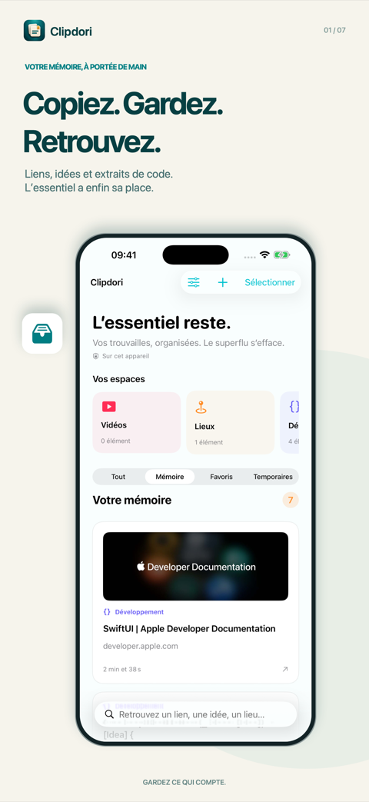
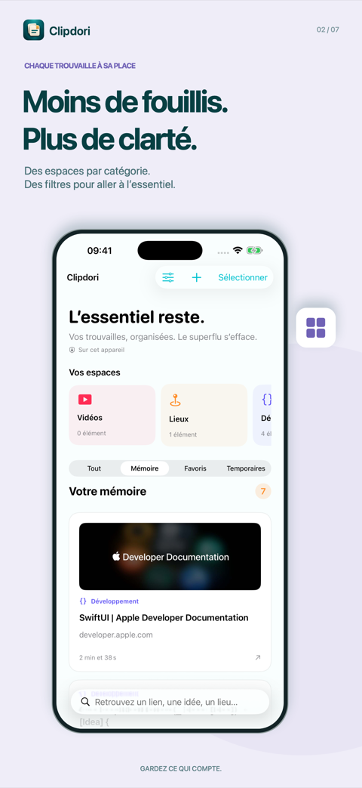
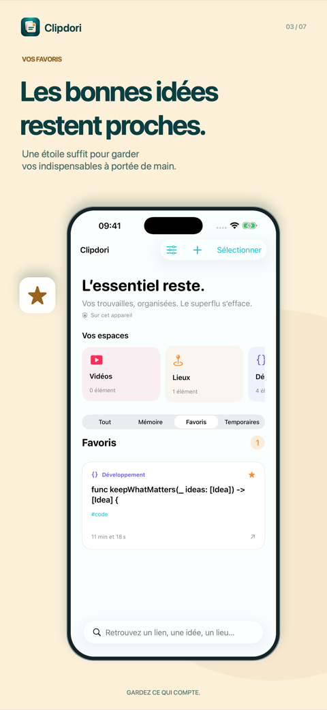
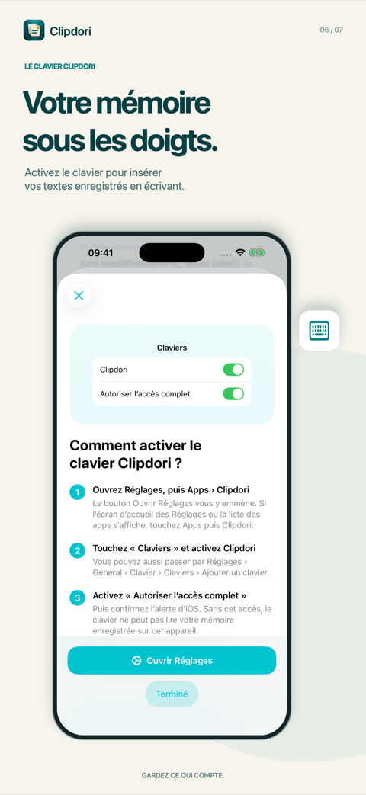
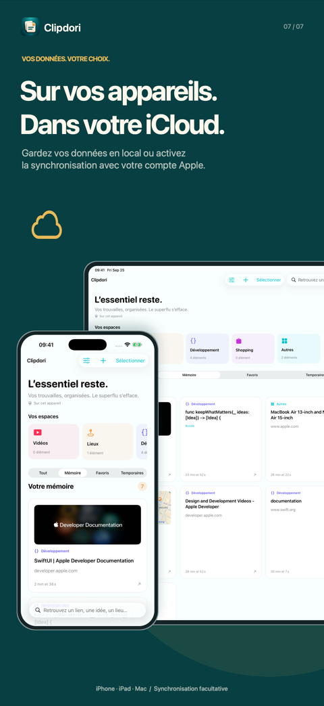

Copiez. Gardez. Retrouvez.
Votre presse-papiers pour les liens, textes et idées qui comptent. Enregistrez vos trouvailles, organisez-les et retrouvez-les quand vous en avez besoin. Gardez vos données en local ou choisissez de les synchroniser avec votre compte Apple.
iPhone et iPad : bientôt disponible
Gardez ce qui compte
Vos liens, textes et extraits de code dans une mémoire organisée, et le superflu qui s’efface de lui-même.
-
Enregistrez à votre rythme
Sur iPhone et iPad, ouvrez le menu Partager d’une app qui partage du texte ou des liens et choisissez Clipdori, ou collez un contenu dans l’app. Sur Mac, activez la capture pour enregistrer les contenus pris en charge lorsque vous les copiez. Mettez-la en pause à tout moment et excluez les apps de votre choix.
-
Retrouvez l’essentiel
Explorez vos espaces par catégorie, recherchez un contenu et filtrez votre mémoire, vos favoris ou vos éléments temporaires. Ajoutez une étoile aux contenus que vous réutilisez souvent. Les éléments temporaires expirent automatiquement.
-
Vos données, votre choix
Utilisez Clipdori en local ou, avec Pro, activez iCloud pour retrouver votre mémoire sur vos appareils connectés au même compte Apple. Aucun compte Clipdori à créer, aucun serveur Clipdori pour stocker vos contenus. Les aperçus de liens sont facultatifs et contactent les sites concernés lorsqu’ils sont activés.
-
Réutilisez vos textes
Copiez un élément ou partagez-le à nouveau. Sur iPhone et iPad, activez le clavier Clipdori pour insérer vos textes enregistrés pendant que vous écrivez. Son accès complet sert à lire les éléments partagés avec l’app ; le clavier n’enregistre pas votre saisie et ne se connecte pas à Internet.
Clipdori en images
Des écrans de l’app sur iPhone et iPad.





Sur iPhone, iPad et Mac
Une seule mémoire, alimentée comme chaque appareil le permet.
iPhone et iPad
L’enregistrement passe par le partage, le collage ou l’option de capture au retour dans l’app. Sur ces appareils, Clipdori ne surveille pas le presse-papiers en arrière-plan. Le clavier nécessite une activation dans Réglages.
Mac
Activez la capture pour conserver les contenus pris en charge lorsque vous les copiez, et retrouvez Clipdori dans la barre des menus. Passez de la grille à une liste plus compacte. Clipdori capture du texte et des liens, pas les fichiers, images ou vidéos eux-mêmes.
Gratuit et Clipdori Pro
Téléchargement gratuit. Pro est un achat unique, sans abonnement.
Gratuit
- Jusqu’à 50 éléments en mémoire, favoris compris
- Éléments temporaires illimités
- Le clavier Clipdori sur iPhone et iPad
À la limite, les nouveaux contenus destinés à la mémoire sont conservés en temporaires pour 7 jours.
Clipdori Pro
- Mémoire illimitée
- Synchronisation iCloud entre vos appareils
- Un seul achat à vie pour iPhone, iPad et Mac avec le même compte Apple
- Compatible avec le partage familial
Le prix est affiché dans l’app avant l’achat. Vous pouvez restaurer votre achat depuis Réglages → Clipdori Pro.